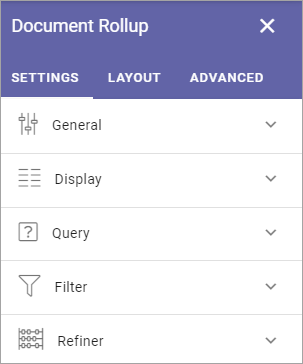
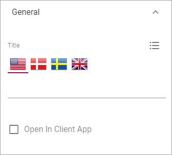
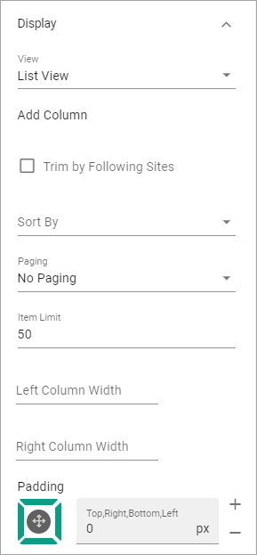
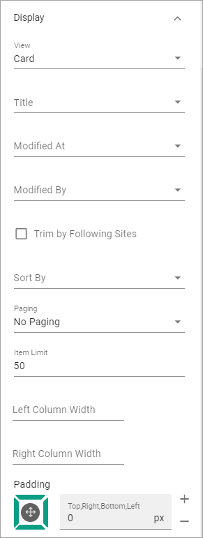
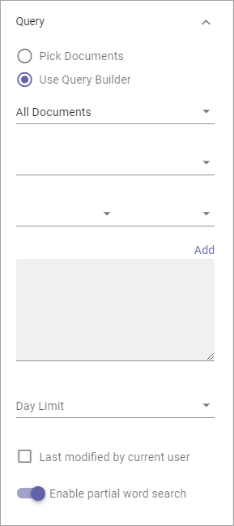
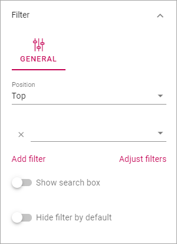
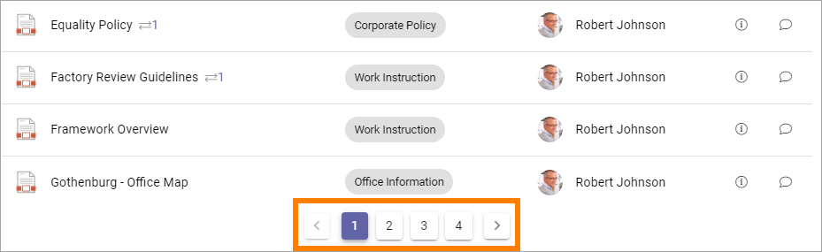
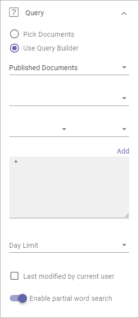

Document Rollup¶
Using The Document Rollup block you can show suitable documents in a list.
The settings¶
The following settings are available:
General¶
Here you can set the following:
- Title: If a title should be shown for the block, add it in this field. If no variation exists for the page, it looks like in the image above and you can set the title in the languages active in the tenant. If variations exists, only one title can be set. In that case, titles in other languages are set in the variations.
- Open in Client App: Documents are by default opened in the online app. If document should be opened in the client app instead, select this option.
Display¶
You can select “List View”, “Card” and “Group by site” here. Available settings differ depending on your choice.
For List View you can set the following:
- Add Column: Select additional columns to show in the list. Icon, Title, Link and Info icon are always shown.
- Trim by Following Site: If this option is selected only documents from sites the logged in user follows are displayed in the list.
- Sort By: Select the column the list should be sorted by.
- Paging: Select paging for the list here. It can be “No paging”, “Classic” or “Scroll”.
- Item Limit: Set the item limit to display in each “page” of the list.
- Left Column Width: Set the left column width in pixels here.
- Right Column Width: Set the right column width in pixels here.
- Padding: Use this setting for padding around the contents in the block.
For Card view the following settings are available:
- Title: Select what to show as the title: “Title”, “Document Type”, “Document Owner”, “Published”, Modified or Document Title..
- Modified At: Here you select the information (field) to show for a document.
- Modified By: You select information (field) to show for who the document was modified by.
- Trim by Following Site: If this option is selected only documents from sites the logged in user follows are displayed in the list.
- Sort By: Select the column the list should be sorted by.
- Paging: Select paging for the list here. It can be “No paging”, “Classic” or “Scroll”.
- Item Limit: Set the item limit to display in each “page” of the list.
- Left Column Width: Set the left column width in pixels here.
- Right Column Width: Set the right column width in pixels here.
- Padding: Use this setting for padding around the contents in the block.
For Group By Site these settings are available:

- Title: Select what to show as the title: “Title”, “Document Type”, “Document Owner”, “Published”, Modified or Document Title..
- Modified At: Here you select the information (field) to show for a document.
- Modified By: You select information (field) to show for who the document was modified by.
- Always Show Letter Avatar: If letter avatars always should be shown, select this option.
- Trim by Following Site: If this option is selected only documents from sites the logged in user follows are displayed in the list.
- Sort By: Select the column the list should be sorted by.
- Item Limit: Set the item limit to display in each “page” of the list.
- Left Column Width: Set the left column width in pixels here.
- Right Column Width: Set the right column width in pixels here.
- Padding: Use this setting for padding around the contents in the block.
Query¶
You can either choose to pick documents to be displayd in the block, or use the Query Builder.
Pick Documents¶
To pick documents, click “ADD DOCUMENT”.

(See below for a description of “Enable partial word search”.)
The Document Picker opens and you use it to select documents.

Available categories (shown as tabs in the picker) are set up in Omnia Admin, see: Document Picker settings
See this page for more information on how to use the Document Picker: The Document Picker
Query Builder¶
Here you add queries, which is the detailed “settings” for what to display in the list:

- Set scope for the document rollup:

- All Documents - always available, meaning ALL documents the logged in user has permissions to read. Use the query settings below to limit what will be shown in the rollup. The rollup can then be set to display just “normal” documents or both normal and controlled documents. To rollup documents from one or more Team Sites, use this option.
- Published Documents - available only if Controlled Documents is active. Meaning ALL published CONTROLLED DOCUMENTS the logged in user has permissions to read. Use the query settings below to limit what will be shown in the rollup.
- Archived Documents - available only if Controlled Documents is active. Meaning all published Controlled Documents in the Archive. As permissions to read documents in the Archive normally is given to just a few, this is for specialized implementations.
Note! Regardless of what you select here, the documents that will be displayed for a user are only those documents that the user has premissions to read.
- Use the three lists for base settings and the field to add a Query Parameter.
- Click “Add” to add the Query.
See an example under Implementation example below.
Note that you can type the script directly in the field, if you know how. You can use all options in the Keyword Query Language (KQL). See this Microsoft page for reference: https://docs.microsoft.com/en-us/sharepoint/dev/general-development/keyword-query-language-kql-syntax-reference
Additionally you can set:
- Day Limit: Use this option to limit the display of older documents. You first select property (for example Modified) and then select how old the documents can be to be displayed in the list.
- Last modified by current user: Use this option to limit the rollup to documents the logged in user has edited, for example for a “My Latest Documents” implementation.
- Enable partial word search: Normally the query for documents searches for whole words (document titles, document owner names etc). With this enabled, the search searches in parts of words as well.
Filter¶
Here you can add filters to show for the list, or add a search box.
What you can do here is described on this page: Filter UI
Refiner¶
Here you select refiners to show for the list:

- Position: Set position for the refiners here; “Top”, “Left” or “Right”.
- Add refiner: Click this option to add a a property to use as a refiner. You can add as many properties as is applicable. For each refiner added you can set sort order; “Alphabetical” or “Count”. You can also set a limit.
Layout and Advanced¶
The tabs Layout and Advanced contain general settings, see: General Block Settings
Implementation example¶
Here’s an example of how it can look for users when a Document Rollup block is set up for Controlled Documents access:

The following settings are used (see above for more information about the fields and options):

Display¶
For Display the following settings are made in this example:

And these:

The “Classic” Paging results in a navigation at the bottom of the list:
Query¶
The following settings are made for Query:
Note the star (*) in the Query Field, meaning All (in this case Published Controlled Documents).

Refiners¶
Finally, Refiners are set up this way:

As you can see, there are four refiners set up. (But only two of them are visible in the example image for the Controlled Documents rollup.)